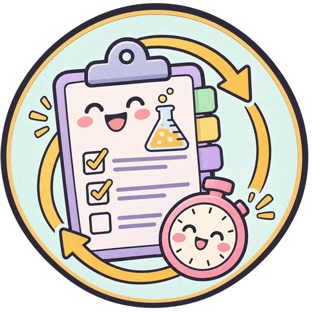

Set up Station Rotation for your class
For instructors. Pick your name and labs, then paste the link into Canvas. Your students open the game with only your labs.
1Who teaches the class?
2Which labs does your class do?
Labs come from the CHEM 3A Lab Manual. Your students can still switch to all labs inside the game.
3Where should students start?
4Copy your link
Copied!
The game sizes itself inside Canvas, so there's no extra scroll bar. Students' progress stays on their own device. The game never asks for names, except in the optional feedback form. It does send anonymous practice stats (topic and right or wrong only: no names, IDs or typed answers) so we can see which topics are hardest; browsers set to Do Not Track or Global Privacy Control send nothing.